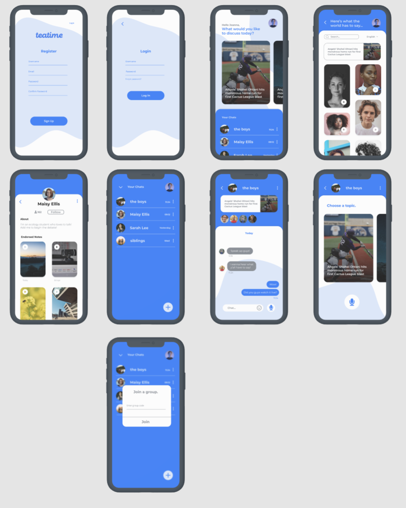
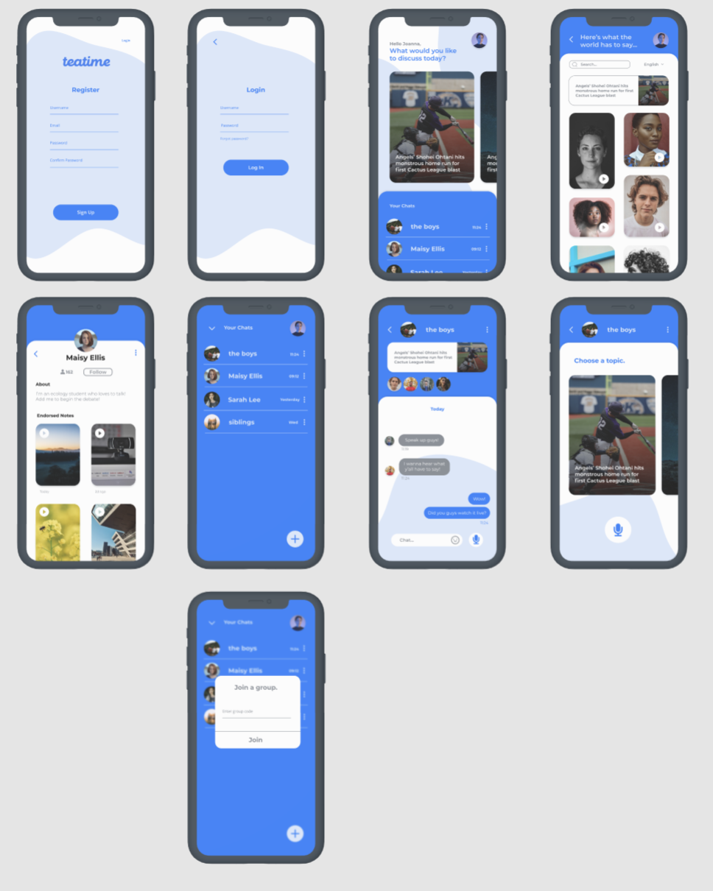

TeaTime
 



ROLE:
Full Stack Developer
TECHNOLOGY:
React Native, Firebase
ACCOMPLISHMENTS:
Fully Functional Prototype with a Two Member Team!
COMPANY:
SFHacks 2021
DEVPOST:
Inspiration:
In this digital age, many people struggle with a lack of face-to-face interaction, leaving a huge impact on their mental health. TeaTime is a platform where users can communicate verbally no matter where or when they are.
What it does:
TeaTime generates exciting discussions by providing a selection of trending topics to consider. Beginning your conversation is as easy as selecting a story of interest and recording your thoughts. Friends and family can endorse your opinion by voting for the best response and send it to the global page. Worldwide sharing makes it simple to connect with like-minded individuals and further the discussion. Everyone is encouraged to speak up and share before they listen to what others have to say as voice notes are locked to users before they have recorded themselves.
How we built it:
We started by showing our designer the ins and outs of Figma, which she learned extremely quickly. While she was putting her skills to use, I rapidly started with our React Native app, building the basic key components like login, signup, and firebase connections. As a two-person team, the rapid prototyping features of Firebase were put to the test, as we used Authentication, Cloud Firestore, Cloud Storage, and Cloud Functions. We were able to implement the designs over to our app quickly and make it FULLY functional. The app supports full login, uses a cloud function to grab daily news articles from various news sources, allows users to make audio recordings which are then stored on cloud storage for global sharing and playback. We also leverage Cloud Firestore to implement a full real-time chat for every group chat. The user is also able to create groups, and join groups by random codes, thanks to the advanced querying features paired with our efficient data structure. There is also an implementation of Azure Speech API for detecting the language of the audio recording, through a Cloud Function storage trigger.
Challenges we ran into:
A big challenge we ran into was with using speech-language detection. Our initial approach with GCP wasn’t detecting the audio recordings from our app. We quickly switched over to try Azure’s Speech API. We also ran into many issues implementing the UI. Most notably, the mosaic wall in the global feed required a lot of styling and calculation of the card positions. We also had members who are brand new to hackathons and design, so there was a rapid learning curve to get them on track and familiar with the whole process.
Accomplishments that we’re proud of:
We’re really proud of the designs from someone new to design. We’re also really happy with the full implementation of the app as a two-person team. Getting the audio to be stored and played back while implementing a real-time chat seemed like an incredibly daunting task initially, and we’re proud to say we completed both.
What we learned:
Many new front-end implementation skills were learned, from capturing device audio to mosaic feeds and real-time chats. We also learned the Azure SDK library, as the first time we explored them.
What's next for TeaTime:
Future steps include perfecting the language detection for audio recordings. Our current deployment has issues identifying some sounds and isn’t as great as we'd like. We would love to perfect this. Otherwise, as the app is near feature complete, we plan to polish various aspects like including logistical pages (settings, legal, license, edit profile), and aim to get it published on both Apple and Android App Stores. Furthermore, we would like to convert our firebase into a Node.js backend to make the application more scalable moving forward.